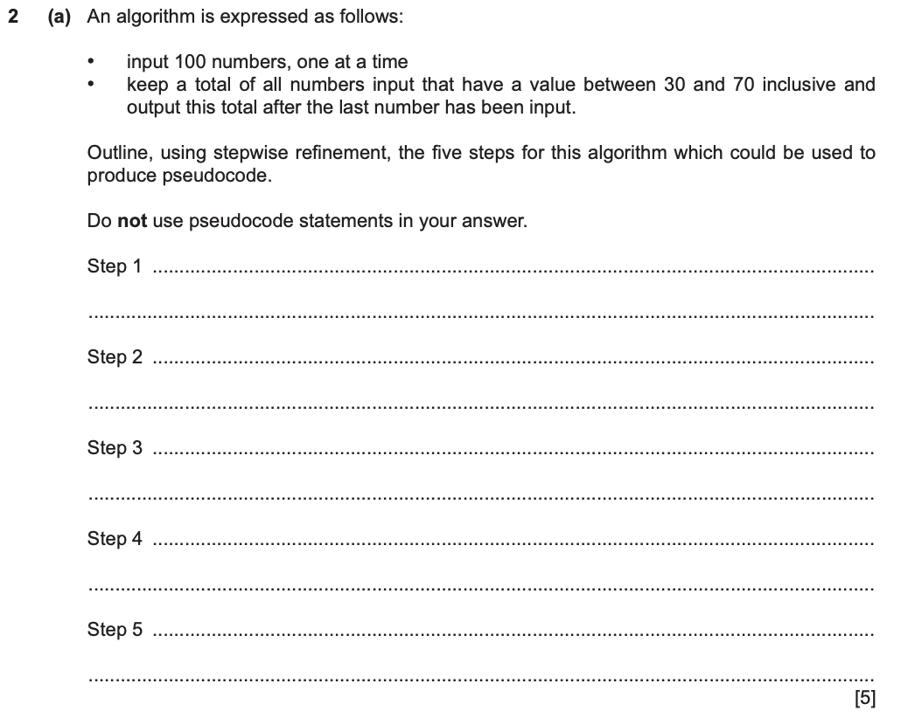
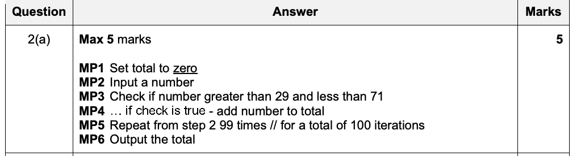

Design a ticket system · Concept 17
Refine an unfinished step into programmable actions
Observe
One unfinished leaf
- High-level step: complete payment
- Known values: Quantity, PlacesLeft, Total
- New input required: Paid
- Success and failure must have different effects
Look, then discuss
When has “complete the payment” become detailed enough for a programmer?
A plan says “check request; calculate charge; complete payment”. Those are useful responsibilities, but the last step does not yet say when to confirm, calculate change or change the available places.
Recall
Decomposition and refinement answer different questions
Decomposition identifies smaller responsibilities. Stepwise refinement adds the internal detail of a chosen step while preserving its purpose. We already know the statements and conditions needed to express that detail.
Explain
Explanation · 1 / 4
State the result before expanding
CompletePayment must either confirm a sufficiently paid sale or reject underpayment. Keep this result visible so that each expansion serves the same purpose rather than adding unrelated features.
Explanation · 2 / 4
Replace a broad action with smaller actions
Expand the step into obtain payment, compare it with Total, perform successful-sale updates or report failure. This first expansion exposes the decision but still leaves arithmetic to define.
Explanation · 3 / 4
Continue until the rules are explicit
On success, Change ← Paid - Total and PlacesLeft ← PlacesLeft - Quantity provide the missing calculations. On failure, display insufficient payment and leave PlacesLeft unchanged. Use Paid >= Total to include exact payment.
Explanation · 4 / 4
Check the endpoint against examples
A leaf such as “process payment correctly” is still unresolved. A comparison, assignment or output with defined operands can be programmed. Trace exact payment and underpayment to check that the refined version preserves the parent task.
Work together
Refine a selected-number total in words
Read exactly four INTEGER values and total only those from 30 to 70 inclusive. This smaller teaching task prepares the control structure used by E072.
Work together · 1 / 3
Write the high-level outline
Obtain the values, decide which qualify, accumulate their contributions and report the total. This describes the jobs but does not yet state initial values, loop count or the complete condition.
Work together · 2 / 3
Resolve each unfinished detail
Set Total to zero. Read the next value. If it is at least 30 and at most 70, add it to Total. Repeat the reading and decision until four values have been input. Output Total afterwards.
Work together · 3 / 3
Test the finished refinement
For 29, 30, 70, 71, only 30 and 70 contribute, giving 100. Read all four inputs even though two are rejected. For E072, apply its stated count and requested five-step response in words.
A final refinement states enough detail for implementation without requiring invented rules.
Experiment
Expand one unfinished payment step at a time. Before revealing each level, state which missing rule prevents the current version from being implemented.
Choose a task and refine each unfinished operation. The final version must state its comparisons, calculations and outputs.
Below 10: 5 points per whole dollar. From 10 through 100: 7. Above 100: 10. The original amount determines the band.
Predict: Could a programmer implement every leaf without inventing a rule?
Predict the result before revealing a step.
Check
Try it yourself · Teacher-written
Refine “calculate the ticket total” through an intermediate level to programmable operations. Use fixed price 25.00 and a 10% student discount.
Check your reasoning
Intermediate: obtain Quantity and Student; calculate the undiscounted amount; select the final amount; display it. Final: INPUT Quantity; INPUT Student; Subtotal ← Quantity * 25.00; IF Student THEN Total ← Subtotal * 0.90 ELSE Total ← Subtotal ENDIF; OUTPUT Total. Declare suitable variables and assume a positive available quantity.
Take it further · Optional challenge
A refinement says “repeat input; add qualifying values; display total”. Name four details it must resolve.
Check the challenge
State the initial total; the exact repetition count or stopping rule; the full qualifying condition; and whether the total is displayed inside or after the loop. Also ensure each repetition reads a new value.
Past paper
Attempt the past-paper questions · 5 marks
1 original question · 1 selected part · 5 marks
Suggested independent working time: 5–10 minutes (teacher estimate).
Answer the original questions first. Open guidance, a teacher solution or the official mark scheme when needed. Only the named parts are assigned; extracts also retain their required shared context.
Original question · Cambridge 9618/21
1. Refine a fixed-input algorithm in words
Cambridge 9618/21 · October/November 2023 · 2(a) · 5 marks
Selected parts: 2(a) [5].

Hint — reading the question
The answer must have five steps in words, not pseudocode statements. Include both boundaries and produce one output after all inputs.
Reasoning and model answer — teacher-written
1. Set the running total to zero.
2. Input the next number.
3. If this number is at least 30 and at most 70, add it to the running total.
4. Repeat steps 2 and 3 until exactly 100 numbers have been input.
5. Output the final total.
Official mark scheme

Why this earns marks — teacher explanation
The official scheme lists six marking points but caps the result at five. The third step combines the condition and addition. The paper says numbers; use inclusive comparisons so fractional numbers near the boundaries are handled correctly, rather than relying on an integer-only shortcut.
Common mistakes — teacher analysis
“Repeat 100 times” after processing one input can imply 101 inputs. “Between” without stating inclusive endpoints can obscure whether 30 and 70 are accepted.
Cambridge past-paper access page ↗ · Source references and page numbers are shown with each extract. © Cambridge University Press & Assessment / UCLES.
Connect
Keep this idea
Repeatedly expand unresolved steps until the operations, conditions and execution order can be programmed.
Use the same method to assemble a complete ticket purchase and challenge its branches.
Continue: Assemble and test one complete ticket purchase →Learning goals
- Describe and use the process of stepwise refinement to express an algorithm to a level of detail from which the task may be programmed